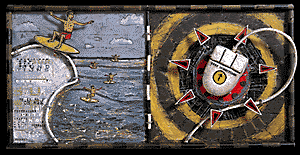
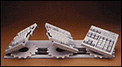
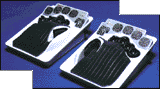
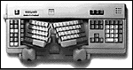
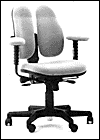
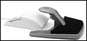

The dead nearly killed my wrists.
I had this job at a newspaper, typing in obituaries. The newspaper was in Florida, so a lot of people passed
on daily. Each morning, I typed fast and hard, trying to get the newly deceased names to the copy editors by the
6 p.m. deadline. After a few weeks, hot streams of pain were creeping up my arms. The back of my wrists felt
tight. I woke up in the middle of the night, cramped and sometimes crying.
I went to doctors, who slapped my fragile wrists into custom-made splints. I had cortisone injected directly into my wrists. I went to physical therapy and squeezed little cushiony balls. I received a few weeks of "light duty." All the while, I swallowed ibuprofen in near fatal quantities.
If the dead didn't do it, the 'net nearly finished my wrists off.
My daily missives and lengthy e-mails to friends, searching the 'net (in the days before the Web), pointing and clicking my way through FTP and gopher sites, posting to newsgroups and hanging out in chat rooms cast me into further suffering. The mouse was a rat and a fink; after an hour of using it, I sometimes felt numbness in my fingers. 
Welcome to the world of repetitive stress injury, a painful place filled with terms such as tendonitis and Carpal Tunnel Syndrome. It used to be occupied only by those who worked in offices. But considering more people are logging onto the 'net at home, families are a target as well. A couple of hours of accessing the 'net daily can put you in the same potentially crippling arena as a professional data cruncher. If you work on a computer by day, then come home and surf at night, your chances of straining your muscles doubles or triples. If you like Inter Relay Chat or those infamous online service chat rooms, consider that just a few sessions of typing, at speeds fast enough to keep up a "conversation," can put you in the splints. What's to blame? Your keyboard.
QWERTY
Today's flat design is infinitely more dangerous than the upright keyboards of typewriters. Ever notice in those
old office photos that the keyboards were lower?The typist did not have to strain his or her back. The necessity
of occasionally returning the
carriage built in automatic breaks.
 "The typewriter was much safer for the human body because of one critical aspect and that is, it did not allow you to rest your wrists while you typed," notes Deborah Quilter, co-author of the book Repetitive Strain Injury: A Computer User's Guide (Wiley & Sons, New York).
The introduction of a flat keyboard for computers took away that safety. The inherent keyboard design forces people to use the delicate muscles in their arms and wrists, rather than the heavier muscles in their backs that the typewriter tended to utilize.
Funny thing is, computer keyboards didn't have to be designed even remotely similar to their typewriter companions. The standard keyboard, starting with the letters QWERTY in the upper left hand corner, was set up with the keys close together so that the old-fashioned metal striking mechanism could work. Taking that out of the equation allows for a greater interpretation of how a keyboard can be designed.
 Enter in wacky new ergonomic keyboards. Ergonomics is the study of how to adapt people to their environments and it has become a buzzword in the past few years as the number of repetitive stress injuries skyrocketed.
Of course, there's worker's compensation to pay for the damages if you can prove you wrecked your wrists, your eyesight or your back while on the job. What about those who simply use their computers at home, to access the Internet? Or those who aggravate existing problems with poor computer setups at home? Not many home computer owners really consider the placement of their equipment, how they sit or the quality of the lighting in which they work, Quilter notes. That puts them even more at risk.
But consider that the average cost cited to treat serious tendonitis or Carpal Tunnel Syndrome cases ranges from $12,000 to $26,000, according to the Bureau of Labor Statistics. Maybe it's worth investing in some preventative equipment and practicing a little precaution when using your computer.
Convalescent
keyboards
The main thrust behind ergonomic keyboards is to get your hands out of a flat position and put less strain on
your tender upper-arm muscles. Some do this by splitting the keyboard for added comfort, and others by tilting
the keyboard so that it's more vertical. A few, like Kinesis Corporation's ergonomic keyboard, sink the keys deep
into a molded keyboard to support the wrists while typing.
 But the other problem, even when using a special keyboard, is that most people type too hard. If you don't update your keyboard, at least invest in a wrist rest -- then position your chair in a way so that your feet are flat on the floor, that your back is straight, and importantly, that your hands meet the keyboard in a flat, relaxed line. Then, when you type, use a light touch.
Perhaps the most vital key is not to brush off pain. Tendonitis and CTS can lead to permanent nerve damage, possibly crippling the ability to use your wrists.
Back side stories

Where you sit as you type is as essential as how you type. Virtually all RSI experts suggest using chairs
specifically designed for ergonomically correct sitting and a few even incorporate the chair with the ergonomic
keyboard. One such solution is the Floating Arms Keyboard from Workplace Designs. The system isn't cheap:the
going price ranges from $1,000 to $1,500. If you haven't got that kind of cash, the most important thing to
invest in is a comfortable chair -- and always, always consider how you're sitting. Slouching forces the verterbrae
into unhealthy positions that can cause serious muscle strain. Make it a point to set up your computer so that
you can sit up straight, in a comfortable, padded chair. "People are putting space-age equip-ment on Gutenberg
work stations," notes Quilter.
Mousing
That little mouse might seem innocuous enough, but it too can cause some serious cases of tendonitis.
Numerous companies have developed products to alleviate the strain. PCPuck by Back Basics ($11 a pair) is a
round disc that's supposed to "float" along with your hand. Then there's the Ergowrist by Ergolink ($12),
designed to cover the mouse and support the wrist (reviewed in this issue). The GyroPoint Desk from Gyration
($149) can be used on or off the desktop, allowing for more user positions and thereby making it easier on the
wrists. Changing the way mousing works is the Touche Touchpad ($60), which allows users to simply point their
fingers, rather than their wrists, to operate the on-screen arrows.
 No matter what you use to protect your wrists, for goodness sakes, get in the habit of checking your sitting position and become aware of where you're working. And take regular breaks. Pull yourself away from the dark hole that can come in so many forms on the 'net, from lengthy IRCsessions to scooting around Web sites or just writing lots of e-mail. Pet your cat, take out the trash. There's a whole world out there, you know.
- With additional reporting by Steven Greenlee